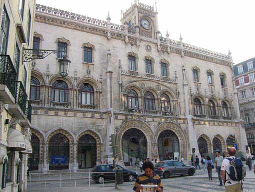

 
zanimiva zgradba .. železniška postaja Rossio v Lizboni. Zanimivo je da nikjer ne vidiš vlakov in tračnic. Na drugi strani zgradbe je namreč hrib in predor, tako vlaki pridejo direkt iz predora v zgradbo. Najprej sploh nismo vedeli da je to postaja, videli smo, da ljudje množicno hodijo ven pa not, pa smo šli pogledat. Najprej greš po stopnicah v prvo nadstropje, nato še dvakrat po tekocih stopnicah, tako da prideš čisto v zgornji štuk .. tam pa peroni :-))) smo bili res presenečeni, prej bi pričakovali gondolo.